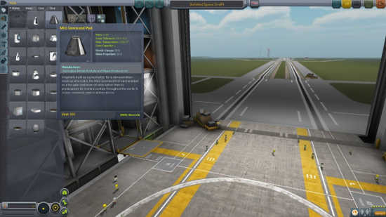
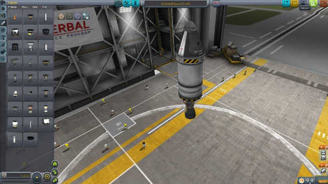
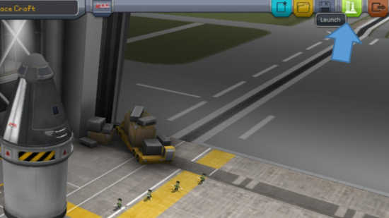
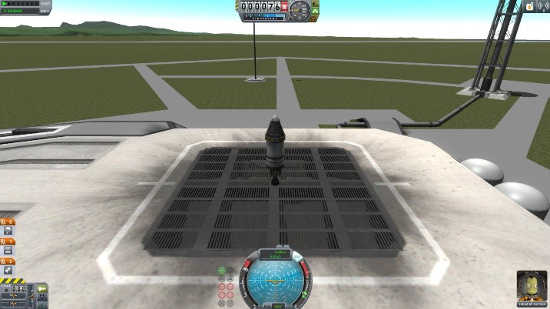
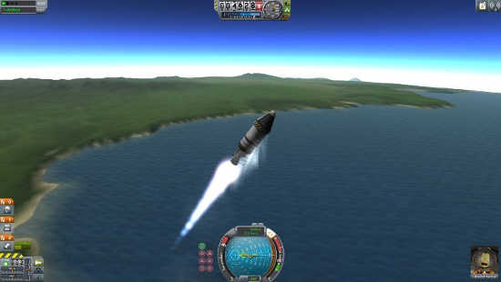
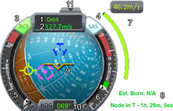
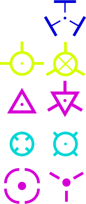
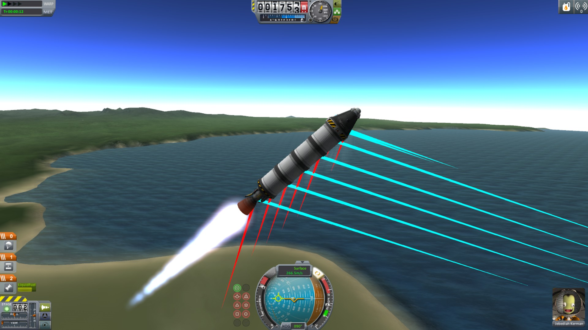
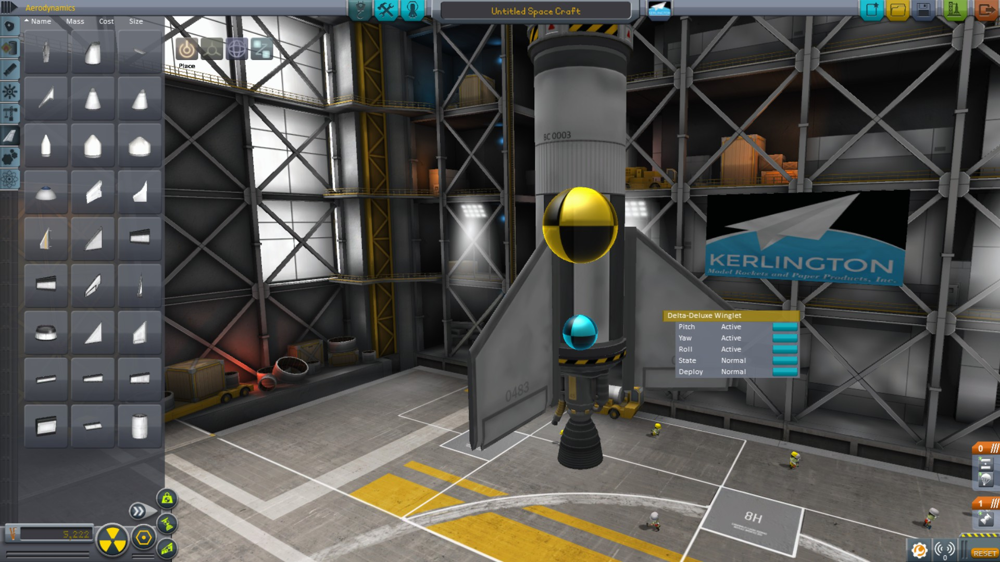

The VAB (Vehicle Assembly Building) is where you’ll build most of your ships. If it launches straight up, the VAB is the place to build it. For now, we’ll skip the details and just get a working rocket. Note that this rocket won’t get very far because it won’t have enough fuel to even reach orbit.

Select the Mk1 Command Pod
The first thing you’ll want to do is grab a command pod. Look under the flat-topped cone shape tab. If you click on this part (not click and hold), it will usually put it in your “hand,” but because this is the first part you selected (your “root” part, which is considered the only part of your ship that has to survive in order for your ship to still exist), it will be automatically placed in the VAB. You can then click on it to move the part up or down as needed. If you ever have to move your entire rocket up (which will be common when you’re building big rockets) click this piece to get the whole rocket assembly.

Add the other parts.
Now you’ll add the other parts. I recommend going under the gear tab (utilities) and grabbing a decoupler. The TR-18A should do fine. Place that right below your command pod. Then, also under utilities, grab a small parachute and stick it on top of your command pod. This will let you land without a fiery death. Next, add in a fuel tank from the second to the top tab.
Then stick an engine onto the bottom from the tab just below it. I used the FL-400 tank, and the LV-T45 engine. I didn’t add any (but should have), but you can stick some fins on the bottom as well if you’d like. These will make your rocket flip less (more on that later). Your rocket should look more or less like mine now.

Push the green button.
First Flight
Now that you have a rocket, you’ll want to fly it. You’ll notice a rocket shaped green button in the upper right corner of the screen. Push it.

Launchpad. Press Space to go to space (Except this rocket won’t get there)
You’ll be taken to the launch pad. Here, all you really have to do to launch is press the space bar. You might also want to max out your throttle though, and turn on SAS (Stability Assist System helps you go straight). To do this, press X, then T, then you’re ready to press Space. You can also use shift and ctrl to raise and lower your throttle. Unlike a gas pedal in your car, throttle sticks wherever you leave it. This rocket is too small to reach space. You’ll need to apply some rocket science (which is actually pretty easy in KSP). I’ll explain that later.

Now you can just fly around with WASD, and Q and E for roll.
Launch time! Play around with this a little, and have some fun blowing up your Kerbals if you’d like. Use WASD, Q, and E to control your craft. Right click and drag to move the camera around. Unless you’re playing in hardcore mode, you can always revert to the Launchpad or the VAB and unkill your Kerbals. When you start trying to actually get places, you’ll usually want to launch straight east (just press “d”). This is towards the 90 degree mark on the nav ball (I’ll explain the nav ball later). You’ll want to be very gentle. The usual flight path is to very slowly tilt all the way up so that you are tilted 45 degrees right around the time you’re at 10,000m elevation (10km as it’s usually referred to). Then, just keep very slowly tilting. This should get you to orbit for a reasonable amount of resources. I’ll explain why I didn’t just say “fuel” in “intermediate rockets”

Image taken from the official wiki.
Current point of reference
Current Speed
RCS Status (active)
SAS Status (active)
Current Throttle
Current g-force
Required maneuver delta-V
Maneuver Information
Level Indicator (golden winged thing)
Current Heading (degrees)
Hide Navball
Nav Ball
The nav ball is the little round blue and brown thing at the bottom of the screen with numbers on it. It tells you which way your rocket is pointing, and which way it’s moving. It also includes readings for speed, throttle, current g-force, and exact (to within one degree) bearing. It’s based on the planet you’re orbiting. If you want to see the maximum of these values your ship has experienced, check out the f3 menu. It’ll also tell you what went wrong if your ship suddenly blows up partially. For this section, assume that you’re in a perfectly circular orbit directly around the equator, heading east (counter clockwise from the top of the planet). The information holds true regardless, but this is the easiest situation to picture, particularly if you’ve played for very long.

These are the nav markers.
From top to bottom:
Maneuver Prograde
Flight Prograde /
Retrograde
Normal /
Anti-Normal
Radial In /
Radial Out
Target Prograde /
Target Retrograde
The yellow markers are for prograde and retrograde. The prograde marker has a vertical line on top and 2 horizontal lines on the sides. The retrograde marker has an x inside of it, and 3 lines that form an equilateral triangle. Prograde is the direction your rocket is moving. Retrograde is the opposite. To slow down, point at the retrograde marker. To speed up, point at prograde.
There are 2 sets of purple markers. First, you have the normal and anti-normal. These are triangles. The normal marker is just a triangle, and is right-side up. The anti-normal marker is upside down, and has lines coming out of the middle of each face. If you accelerate towards the normal marker, you’ll tip your orbit up in front of you, and down behind you. Anti-normal does the opposite. This can be useful for trying to land at a specific spot, or getting an intercept with the Mun or Minmus (more on that later).
The second set of purple markers are the target prograde and retrograde. These only show up if you set something as your target. Target prograde is just a circle made of 4 lines, with gaps as though there were a white plus symbol in the middle. Target retrograde is just 3 lines forming an upside down triangle. These just show you where your ship is pointed and going relative to another ship or object that you told the game you want to set as your target. It’s very useful to know this for when you’re trying to perform an orbital rendezvous (think docking 2 ships together).
The light blue markers show you your radial in and radial out directions. As described by the Nav Ball page of the official wiki, “Performing a radial burn will rotate the orbit around the craft like spinning a hula hoop with a stick” where your ship is the stick. The radial in marker looks like a circle with an x on the inside. The radial out marker has lines forming an x on the outside of the circle.
There’s a dark blue marker for your maneuver. This shows you which direction you’ll have to point to make a pre-planned burn work correctly. You’ll understand this a bit better after you start playing around with maneuver nodes. I’ll do my best to explain this during the orbital mechanics guide.
Lastly, you should note that the brown half of the nav ball is the side that is facing towards the ground. Brown is ground, and blue is sky. In a circular orbit, your prograde and retrograde should always be perfectly on the horizon, or halfway on the blue and halfway on the brown halves of the nav ball.

Strong crosswinds can flip your rocket. Point into the wind by following your prograde marker.
My Rocket Keeps Flipping, or I can't steer
Flipping rockets can have a few causes, but it all boils down to more force being applied at the top of the rocket than the bottom. Whenever you turn, you angle your craft relative to the wind. This means that the wind will push on the side of your rocket. If the center of mass of your rocket were perfectly in the center, this wouldn’t do much. But, because the center of mass is usually closer to the bottom, you’ll have an issue where your rocket will act like a lever, with the center of mass being the fulcrum. More wind is pushing on the top half of the rocket than the bottom half because there is more surface area above the center of mass than below. There are a few solutions to this:
Find a way to raise the center of mass (and keep it there)
Add lots and lots of reaction wheels to force the rocket to fly straight (very Kerbal, not very realistic or practical)
Add fins at the bottom to increase drag at the bottom (also consider reducing drag at the top by using a protective aero shell)

Adding fins at the bottom of your rocket is the best way to fix issues with stability.
Adding fins is the best solution, and is the most common. Take a look at the center of lift of your vessel, and compare it to the center of mass. If you get the center of lift significantly below the center of mass, then you’ll fly straight. But, you’ll have a hard time steering. Be wary of having too stable of a rocket. Adding the aero shell to the top (the fairing) lets you get to orbit more efficiently, in spite of adding extra needless mass, by letting you split through the atmosphere more easily and by reducing drag. This makes it a good idea in many cases regardless of whether your rocket keeps flipping. Be sure to weigh the benefits versus the loss due to excess mass.